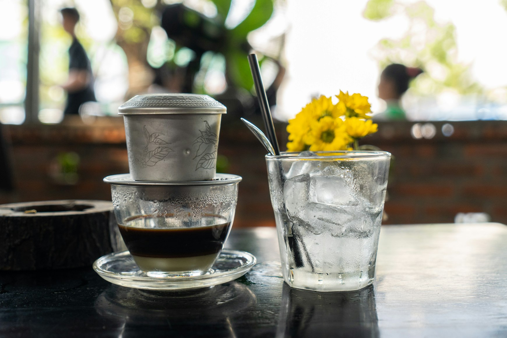
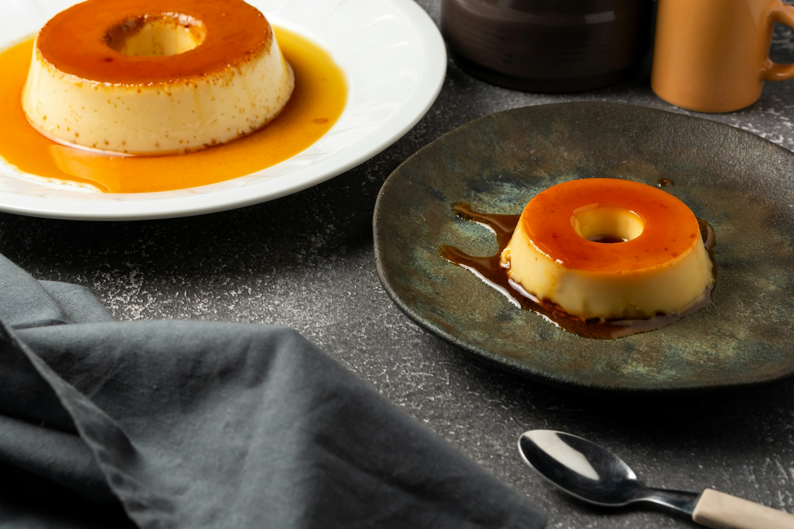
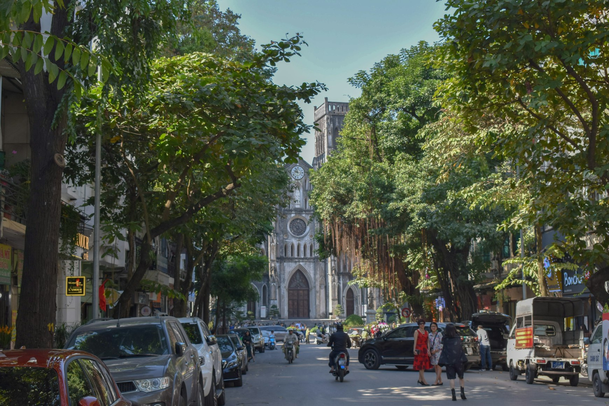

By six in the morning, Hanoi already smells of charcoal, coffee, and warm bread.
Metal carts stand on damp sidewalks while motorbikes move through the grey light before sunrise. Somewhere behind the traffic, a knife hits a cutting board in quick, repetitive rhythms. Baguettes crack open. Coffee drips slowly through metal filters into thick condensed milk waiting at the bottom of cloudy glasses.
Very little about this feels European at first.
And yet much of it began with France.
For almost seventy years, Vietnam was part of French Indochina. The empire itself disappeared long ago, but traces of it remained in quieter ways — not only in architecture or old government buildings, but in flavors, habits, and the strange persistence of certain foods that no longer feel entirely foreign or entirely local.
When Bread Became Vietnamese
The French introduced wheat bread to Vietnam in the nineteenth century, but the version that survived here changed completely. The Vietnamese baguette became lighter, airier, thinner-skinned — adapted for humidity, heat, and crowded streets where food is eaten quickly beside traffic.
Inside, the fillings moved even further away from Europe.
Pâté remained, but beside chili, coriander, pickled vegetables, fish sauce, grilled pork, and fresh herbs still wet from morning markets. Butter mixed with spice. French bread absorbed Vietnamese flavors until bánh mì became something France itself could never have invented.
Coffee That Changed in the Heat
The same transformation happened with coffee.
Coffee cultivation expanded heavily during the colonial period, especially in the cooler highlands around Da Lat, where French settlers escaped the tropical heat of the lowlands. Today Vietnam is one of the world’s largest coffee producers, but Vietnamese coffee culture feels far removed from Parisian cafés.

It became darker. Stronger. Sweeter.
Partly because tropical climates changed how people drank coffee. Fresh milk spoiled quickly in the heat, while condensed milk lasted far longer. Over time, necessity became preference. The flavor itself changed.
Even now, many old cafés in Hanoi still prepare coffee slowly through small metal phin filters placed directly above the cup. Outside, traffic moves with almost mechanical aggression. Inside, time slows down slightly beneath yellow walls stained by decades of humidity and cigarette smoke.
Cafés Between Eras
Some cafés still feel suspended between eras.
Ceiling fans rotate lazily above tiled floors. Old wooden shutters block the afternoon heat. Glass displays hold sponge cakes, flan, butter pastries, and baguettes beside cans of condensed milk and aging espresso machines that seem older than the buildings themselves.

French influence survived not because Vietnam tried to preserve France, but because Vietnamese culture absorbed certain things selectively and transformed them completely.
That transformation is what makes the country so interesting to taste.
What Remained After Empire
Very little remained untouched. Bread became lighter. Coffee became heavier. European techniques adapted to tropical weather, local ingredients, economic realities, and Vietnamese preferences until the colonial origins became almost secondary to what the food eventually evolved into.
What survives now is not French cuisine transplanted into Southeast Asia.
It is something more complicated.
A culinary landscape where empire dissolved slowly into everyday life. Where some of the most recognizable symbols of French food culture survived longest not in Europe, but beneath tropical rain, electrical wires, motorbike traffic, and humid air on the streets of Hanoi and Ho Chi Minh City.

And by morning, the smell of coffee and hot bread still moves through the city long before the heat arrives.